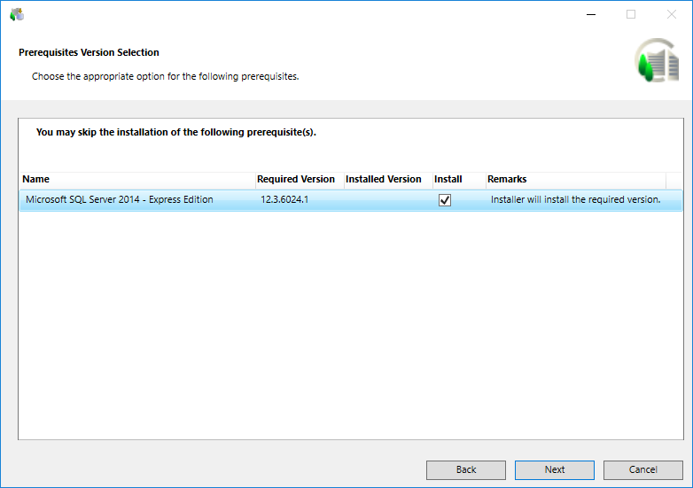

Verify the Prerequisite Version Selection Option
- The Prerequisites Version Selection dialog box displays listing the required versions of the installed prerequisites only when the tag <AutoResolvePrerequisiteConflict> in the selected GMSPlatform.XML is configured as False.
NOTE 1: By default, it is recommended to install the prerequisite Microsoft SQL Server 2022 - Express Edition. If you want to use another SQL server, you can skip it. However, the three prerequisites, Microsoft SQL Server 2012 - Native Client, Microsoft SQL Server 2016 - System CLR Types, and Microsoft SQL Server 2016 - Management Objects are installed on the server in this given order. Installing these prerequisites, helps create an HDB remote server using SMC, when no SQL exists on the server.
NOTE 2: If the compatible higher version of SQL is already installed on your computer, by default, the Installer skips (the Install check box is not selected) the installation of the lower version of SQL.
NOTE 3: During the Client/FEP installation, the Prerequisite Version Selection dialog box only displays when there is any conflict with the installed prerequisites in the system. It lists the required versions of the installed prerequisites and recommends installing the required version, if the installed version is not compatible.
NOTE 4: You can also use the modified GMS Platform.xml file, where theSkipInstallationsection is enabled to skip the installation of Microsoft SQL Server 2022 - Express Edition. Even if you skip, the three prerequisites, Microsoft SQL Server 2012 - Native Client, Microsoft SQL Server 2016 - System CLR Types, and Microsoft SQL Server 2016 - Management Objects are installed on the server in this given order. - Click Next.

- If the path is invalid or there is no sufficient space for installation, the Installation Folder dialog box displays.
- Accept the default installation directory location [Installation Drive]:\[Installation Folder] for the installation or choose a new location by clicking Change.
- Click Next.
NOTE: If a negative number in red displays in the Remaining Space field, then Next is unavailable and a warning message displays. You must re-run the setup after freeing a sufficient amount of disk space. (See Tips to Free Up Disk Space in Installation Folder > Verify the Installation Environment) - If any inconsistency exists with the EULA entry in the GMS Platform.xml file (for example, EULA entry missing) or with the EULA file (for example, EULA file missing in the software distribution), the License Agreement dialog box displays.
- Accept the terms of the license agreement by selecting Agree for each license that you want to install and then click Next.